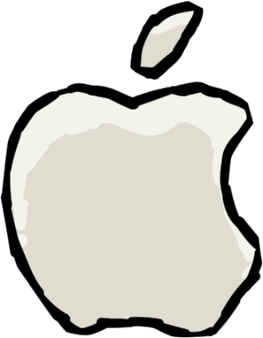

An educational music puzzle and ear training game



Free and open-source for iOS, Android, Windows, OS X, and Linux
What is DoReMi?
DoReMi is a music puzzle game designed to promote music education and ear training. DoReMi is an attempt to form an approachable bridge between ear training in traditional/classical music education, and casual puzzle video game audiences.
Players solve puzzles by listening to musical notes on a staff and match pitches to form the correct solution. Puzzles range in difficulty between arpeggio solutions, major/minor solutions, and difficult chromatic solutions.
DoReMi is designed to accommodate players of all ages, and players of all (or no) levels of music education.
When is DoReMi available?
DoReMi is still in development, but will hopefully be available and ready to release by May 2016. You can track the development status at the DoReMi GitHub page.
How much does DoReMi cost?
DoReMi is completely free! Not only that, but DoReMi is also open-source, and available under the MIT license.
Complete source code on GitHub: github.com/edwinhollen/doremi
About the developer
Original gameplay concepts, visual design, line of code, and art asset was created with love 💖 by Edwin Hollen. Check me out on GitHub or on LinkedIn. DoReMi was created for my senior project at West Virginia Wesleyan College in Buckhannon, W.V. with additional guidance by my professor and advisor Gretchen Lynn.
Technical details
DoReMi is written in Java and uses the libGDX game framework.
Additional research details can be found here: DoReMi Paper (Note: This paper should be treated as background information and includes some very old gameplay concepts and visual designs)